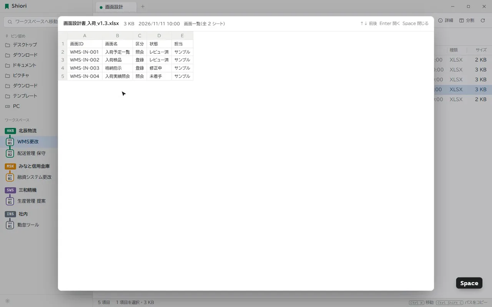
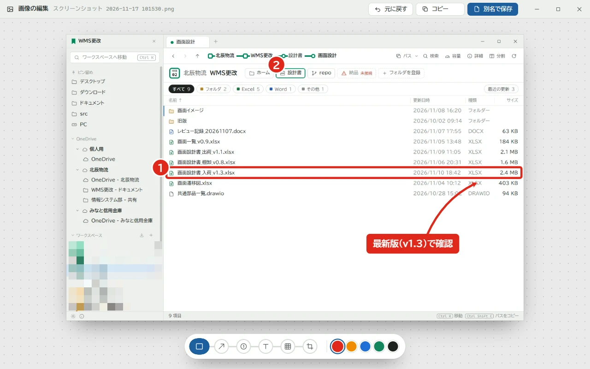
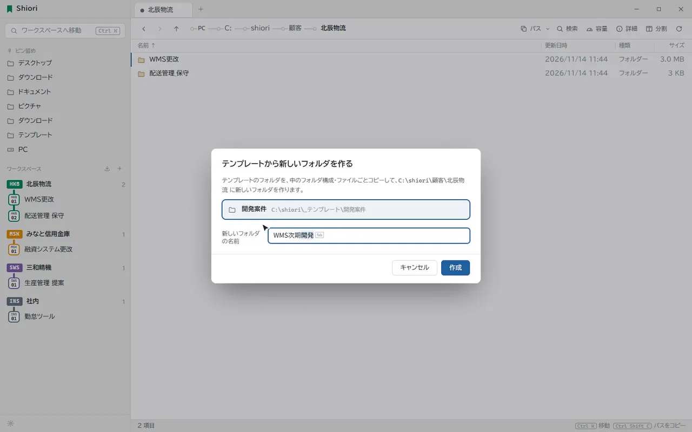
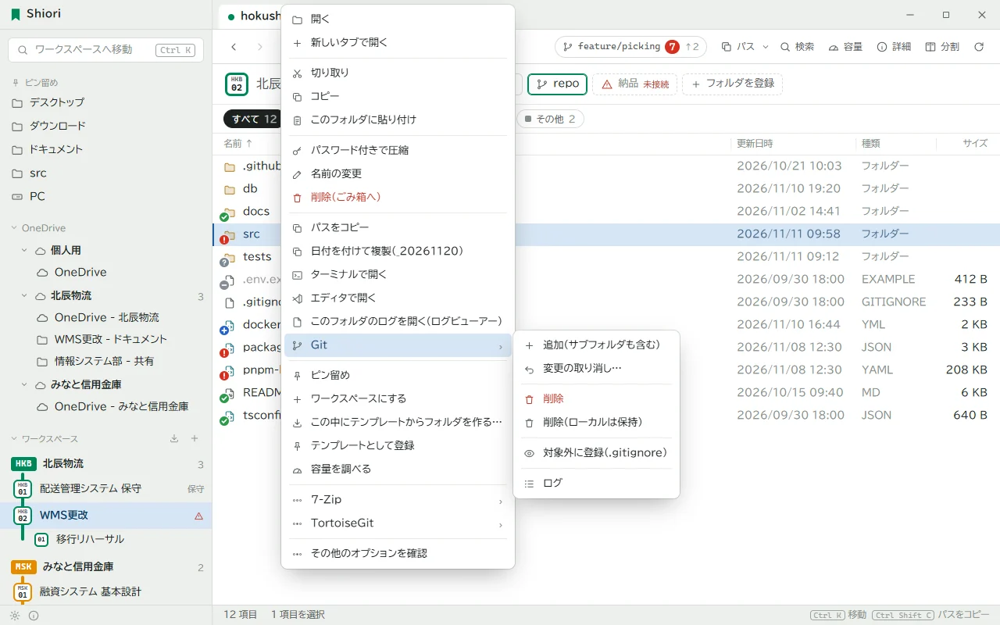
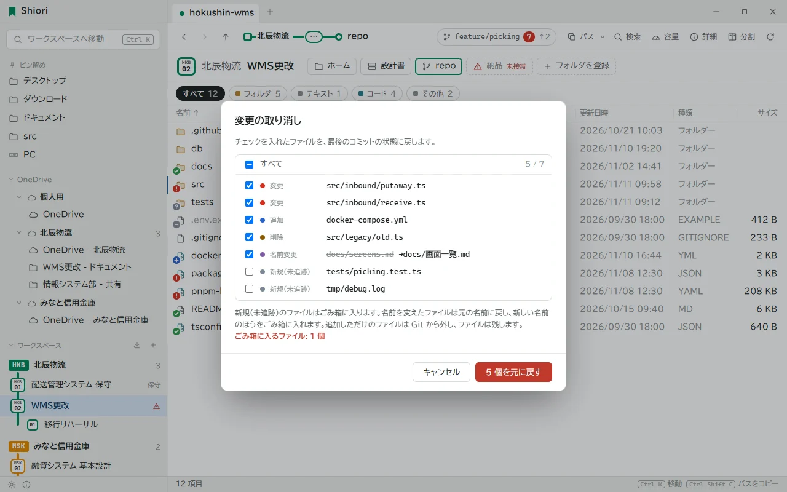
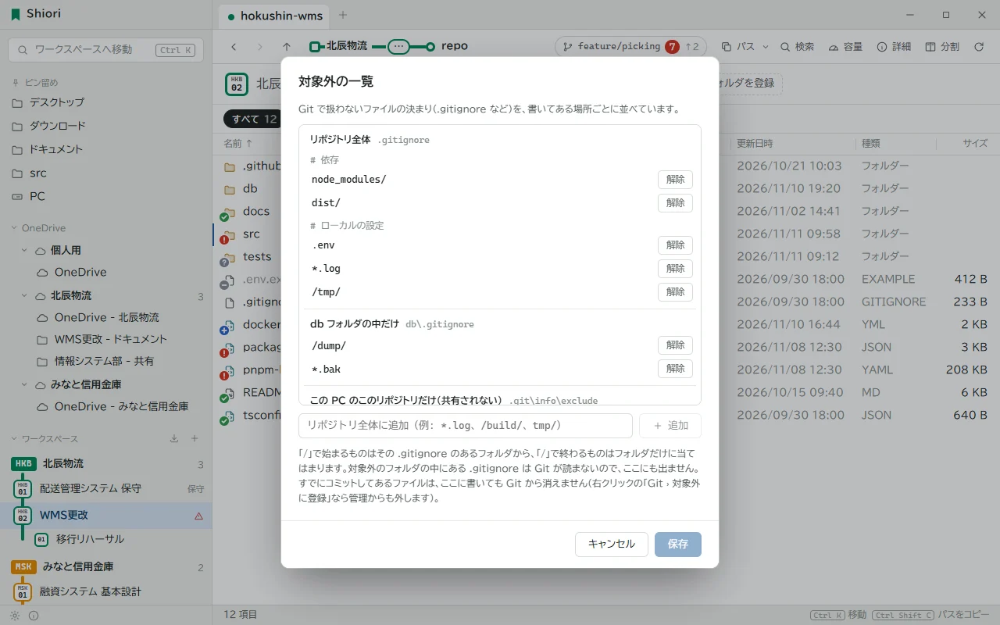
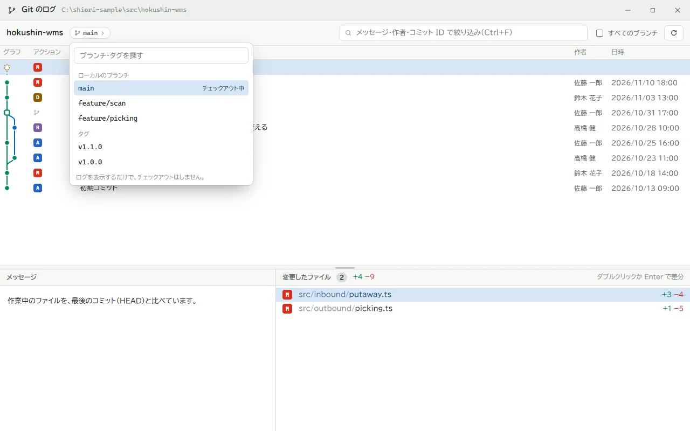
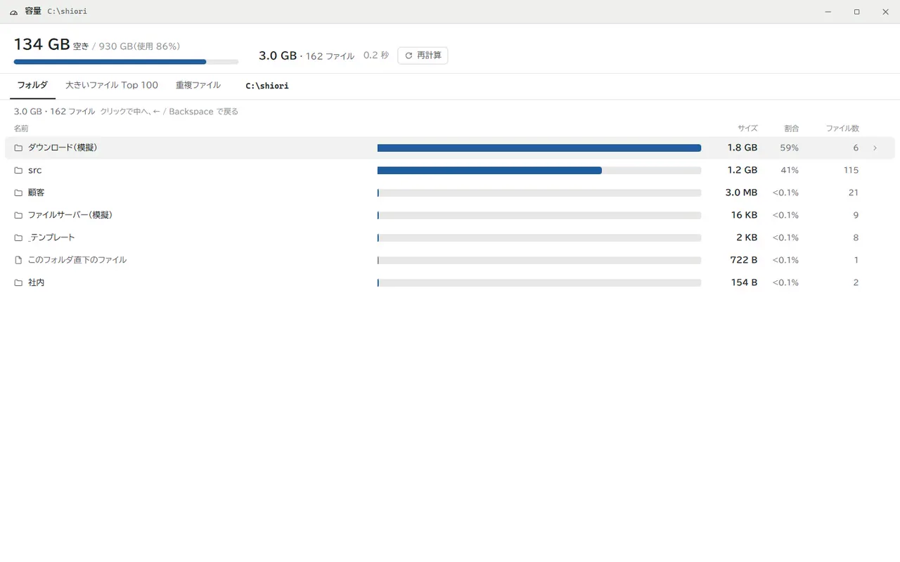
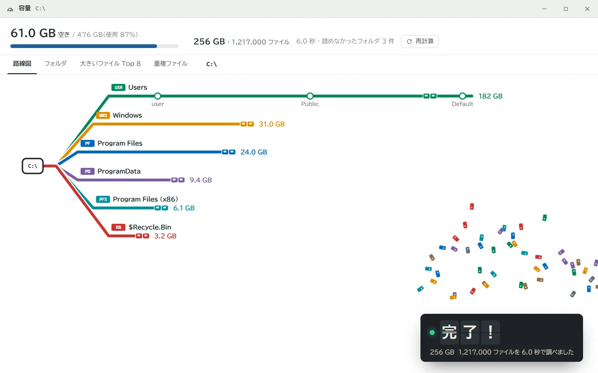
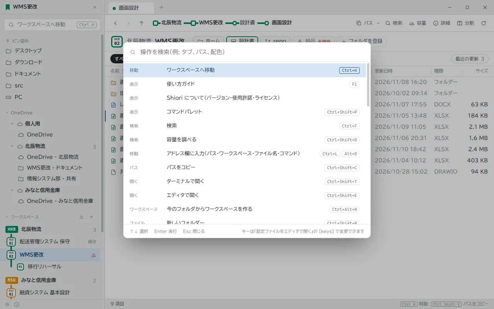

Shiori の使い方
Shiori は、ひとつの案件で使うフォルダ（共有フォルダの設計書、手元のリポジトリ、受け取った資料など）を「ワークスペース」にまとめて、いつでもすぐに開けるファイラーです。ここでは、できることを画面の写真といっしょに紹介します。写真の名前やフォルダはすべて見本です。
画面の見かた
 1
2
3
4
5
6
7
8
9
10
11
1
2
3
4
5
6
7
8
9
10
11
- ワークスペースへ移動名前の一部で探して開きます（Ctrl+K）。
- ピン留め・PCよく使うフォルダと、ドライブの一覧。
- OneDriveアカウント（個人用・会社ごと）にまとまって並びます。会社の SharePoint から同期したフォルダも。
- ワークスペース案件ごとのフォルダのまとまり。色と略称で見分けます。
- タブワークスペースごとに、開いていたタブを覚えています。
- パスのバー今いる場所。クリックすると、その階層へ移動します。
- ツールバーパスのコピー、検索、容量、詳細、左右の分割。
- 登録したフォルダワークスペースに登録した「ホーム」「設計書」「repo」など。
- 種類で絞り込みフォルダ・Excel・Word などで一覧を絞ります。
- ファイルの一覧ダブルクリックか Enter で開きます。
- 設定・Shiori について歯車が設定、ⓘ がバージョンとショートカットの一覧。
ワークスペース
ひとつの案件で使うフォルダを、場所がばらばらでもひとつにまとめます。「顧客 › 案件 › 作業」のように、いくつでも入れ子にできます。

- 作る: フォルダを開いて、サイドバーの「ワークスペース」の ＋（Ctrl+Alt+N）。一覧のフォルダをサイドバーの「ワークスペース」へドラッグしても作れます（ワークスペースの上に落とすとその下に、何個かまとめて落とすとまとめて登録）。
- フォルダを登録: 見出しの「フォルダを登録」で、別の場所のフォルダ（共有フォルダ、別のドライブなど）も追加できます。
- 並べ替え: 登録したフォルダのボタンはドラッグで並べ替えられます（ワークスペースの編集画面では、行の左端のつまみをドラッグ）。左端（編集画面ではいちばん上）のフォルダが、ワークスペースを開いたときに開きます。
- まとめて取り込む:
顧客\案件のような今のフォルダ構成から、ワークスペースをまとめて作れます（「ワークスペース」の取り込みボタン）。 - 並べ替え: サイドバーでドラッグ。ほかのワークスペースの行の真ん中に落とすと、その下に入ります（行の上端・下端に落とすと、その前・後ろに並びます）。一覧より下の空いているところに落とすと、いちばん最後に移ります。右クリックで名前の変更・色・略称（HKB など）の編集。
- 上から順に開く: Ctrl+1〜9。
- 外す: 右クリック →「Shiori から外す」。フォルダそのものは消えません。
- 接続できないフォルダ（VPN が切れている共有フォルダなど）には「未接続」、削除や移動で見つからないフォルダには「見つかりません」と出ます。押すと、場所を選び直す・上の階層を開く・登録から外す（フォルダは消えません）を選べます。
- ピン留めやテンプレートのフォルダが見つからないときは、薄く表示されます。開いていたフォルダが見つからないときは、近くの上の階層を開きます。
名前で探して開く


タブと左右の分割
タブと左右の分割は、ワークスペースごとに覚えています。別の案件に切り替えると、その案件で開いていたタブに戻ります。アプリを閉じて開き直しても、ウィンドウの位置や大きさも含めてそのままです。


- 新しいタブ Ctrl+T、閉じる Ctrl+W、閉じたタブを戻す Ctrl+Alt+T。
- 左右の行き来は F6 か Tab、入れ替えは Ctrl+U。
- ファイルを反対側へドラッグするとコピー・移動。ドラッグ中は、登録したフォルダやピン留めも置き場所になります。
- タブを反対側へドラッグすると、そちらで開きます。
フォルダを移動する
アドレス欄（Ctrl+L）には、パスだけでなく、ワークスペースの名前やファイル名、操作の名前も入力できます。ファイルのパスを入れて Enter を押すと、そのファイルを開きます（エクスプローラーの「パスのコピー」で付く「"」や、%USERPROFILE% のような書き方もそのまま使えます）。

- 戻る Alt+←、進む Alt+→、上の階層へ Alt+↑ または Backspace。上の階層に戻ると、今までいたフォルダが選ばれた状態になるので、そのまま Enter で戻ったり、↑ ↓ で隣のフォルダへ移ったりできます（Alt+← で戻ったときも同じです）。
- パスのバーの各部分をクリックすると、その階層へ。長いパスで「…」になっている部分も、押すと一覧が出ます。
- 一覧で文字を打つと、その名前で始まるファイルへカーソルが移ります（エクスプローラーと同じ）。
- よく使うフォルダは、右クリックの「ピン留め」でサイドバーに並べられます。
- OneDrive は、サイドバーの「OneDrive」にアカウントごと（個人用・会社ごと）にまとまって並びます。会社の SharePoint や Teams から同期したフォルダも、その会社の下に入ります。ワークスペースと同じように折りたためます。
- ZIP・7z などの圧縮ファイルは、ダブルクリックでフォルダのように中へ入れます（7z・rar は 7-Zip が必要）。
- 展開している間は、右下に進み具合（割合・大きさ・ファイル数）が出ます。終わると「取り出しました」に変わります。× で中止すると、取り出しかけたものは消します。
検索
Ctrl+F で、今のフォルダの下を探します。ファイル名は打つそばから見つかり、Tab を押すとファイルの中身の検索に切り替わります。


- 今のフォルダの中だけを名前で絞るときは Ctrl+Shift+F。
- 一覧の上の「Excel」「Word」などのボタンで、種類ごとに絞れます。
- 並び順は列の見出しをクリックして変えます（右クリックで一覧から選べます）。並び順はフォルダごとに覚えていて、ダウンロードのフォルダは最初から新しい順です。名前順ではフォルダが先、続いてファイル。更新日時・サイズ順ではフォルダとファイルを区別せずに並べます（見出しの右クリックで、フォルダを先にすることもできます）。
プレビューと詳細
ファイルを選んで Space を押すと、開かずに中身を確認できます。↑↓ で次のファイルへ、Enter でそのまま開きます。Excel・Word（見出し・箇条書き・表を整えて表示）・PowerPoint・PDF・画像・Markdown・ソースコードに対応しています。表示した文字はドラッグで選んで Ctrl+C でコピーできます（Ctrl+A で全部。行番号は入りません）。


ファイルの操作

- まとめて選ぶ: Ctrl・Shift を押しながらクリックするほか、ファイルの上で左ボタンを少し（0.4 秒ほど）押したままにしてから上下に動かすと、その範囲をまとめて選べます（すぐに動かすとファイルのドラッグ）。一覧の下の何もないところからのドラッグでも選べます。Ctrl を押しながらなら今の選択に足し、途中の Esc で元に戻します。
- コピー・移動: Ctrl+C・Ctrl+X・Ctrl+V とドラッグ。大きなコピーは順番に処理し、進み具合を下に表示します。同じ名前があるときは、コピーを始める前にどうするか聞きます。
- 新しいファイル: 一覧の何もないところを右クリック →「新しいファイル」で、テキスト・Word・Excel・PowerPoint・Markdown から選べます。Word などはエクスプローラーの「新規作成」と同じひな形から作るので、そのまま開けます。作るとすぐ名前を入力できます。
- 画像・テキストの貼り付け: クリップボードにファイルがなく、画像（スクリーンショットなど）があるときは Ctrl+V で PNG ファイルとして、テキストなら .txt ファイルとして今のフォルダに保存します。名前は日時（「20261116_213045.png」など）で、すぐに名前を入力して変えられます（Ctrl+Z で取り消し）。
- 文字コード・改行コードの変換: 下のバーの「UTF-8 · CRLF」のような表示を押すか、コマンドパレット（Ctrl+Shift+P）の「文字コード・改行コードを変換」で、選んでいるファイル（フォルダを選べば中のテキストファイルすべて）を UTF-8・Shift_JIS などや、改行の CRLF（Windows）・LF（Linux・Mac）に変えられます。EUC-JP・UTF-8 BOM・UTF-16 は「その他」にあります。変換先にない文字（Shift_JIS にない絵文字など）があるファイルは、変換する前に何行目のどの文字かを知らせて、そのままにします。テキストではないファイルも対象外です。Ctrl+Z で元に戻せます。
- 使用中で操作できないとき: 名前の変更・移動・削除が「使用中」で失敗したときは、そのファイルを開いているアプリ（Excel など）や、そのフォルダを作業フォルダにしているアプリ（ターミナルや、そこのファイルを開いたサクラエディタなどのエディター）の名前を、画面の中央に出します。「もう一度」でやり直せます。
- ほかのアプリへドラッグ: エクスプローラーと同じように、ファイルそのものを渡せます（メールに添付、ブラウザからアップロード、エクスプローラーへコピー・移動など）。
- 元に戻す: Ctrl+Z。名前の変更・移動・コピーに加えて、ごみ箱に入れた削除も元の場所に戻せます。
- 管理者として続ける: Program Files やほかのユーザーのフォルダなどで、コピー・移動・削除・名前の変更・新しいフォルダの作成のアクセスが拒否されると、エクスプローラーと同じく「このフォルダーへのアクセス許可が必要です」と出ます。「管理者として続ける」を押すと、Windows の確認（ユーザー アカウント制御）のあとに、その操作を管理者の権限で行います。コピー・移動の途中で拒否された項目は、最後にまとめて聞き、確認は 1 回で残りをすべて続けます（同じ名前の確認や進み具合はいつもどおり。進み具合の横に「管理者」と出ます）。Shiori 自体は管理者になりません。Ctrl+Z で戻すときに拒否されたときも、同じように続けられます。
- 日付を付けて複製: 「画面設計書_20261114.xlsx」のように、今日の日付を付けてコピーします。
- パスのコピー: Ctrl+Shift+C。ツールバーの「パス」から、UNC のパスなど別の形でもコピーできます。
- 比較: 2 つ選んで右クリック →「比較」で WinMerge を開きます（ファイル同士・フォルダ同士）。
- 開く: ターミナル（Ctrl+Shift+T）、エディタ（Ctrl+Shift+E）で今の場所を開けます。
- OneDrive・SharePoint のフォルダでは、「クラウドのみ」「この PC にある」などの状態を表示します。
画像の編集
画像を右クリック →「画像を編集」か、プレビュー（Space）で E を押すと、別のウィンドウで開きます。スクリーンショットに印を付けて、エビデンスや手順書に貼るときに使えます。

- 道具と色の切り替え: Tab・← → で道具を順に、Ctrl+Tab で色を一つ右へ（右端の次は左端）。「隠す」では Ctrl+Tab でモザイクと塗りつぶしを切り替えます。
- 番号: クリックするたびに 1、2、3…と増えます。「1 から」で振り直せます。
- 切り取り: 残す範囲を囲んで、右クリックか Enter。
- 元に戻す: Ctrl+Z で一つずつ戻せます（Ctrl+Y でやり直し）。番号や切り取りも戻ります。
- コピーと保存: 「コピー」（Ctrl+C）で Excel や Word、メールにそのまま貼れます。「別名で保存」（Ctrl+S）は元の画像の横に「〜_編集.png」として保存します。元の画像は書き換えません。
画像の変換
画像を右クリック →「画像を変換」から、変換のしかたを選びます。ブラウザの変換サービスにファイルを上げずに、この PC の中で変換します。
- JPG に変換 / PNG に変換: 元の画像の横に、同じ名前で拡張子だけ違うファイルを作ります（同じ名前があるときは「写真 (2).jpg」のように番号を付けます）。iPhone の写真（HEIC）、Web から保存した WebP・AVIF、PNG・JPG を変換できます。元の画像はそのまま残ります。
- 1 つの PDF にまとめる: 選んだ画像を一覧に並んでいる順に、1 枚 1 ページの PDF にします（A4。横長の画像は横向きのページ）。PDF は最初の画像と同じフォルダに「〜 ほか2枚.pdf」の名前でできます。
- まとめて変換: 何枚選んでも一度に変換します。画像でないファイルが混ざっていても、画像だけを変換します。
- スキップ: GIF・BMP などの対応していない形式や、すでに JPG のものを「JPG に変換」したときなどは変換せず、右下にスキップした理由と件数を表示します（閉じるまで残ります）。
- 写真の向きと撮影日時: スマートフォンの写真は、回転の情報どおりの向きで書き出します。撮影日時も引き継ぎます。透明な部分は、JPG と PDF では白になります。
- 元に戻す: Ctrl+Z で、変換して作ったファイルをごみ箱へ移します。
HEIC・AVIF・WebP を読むには、Windows の拡張機能（Microsoft Store の「HEIF 画像拡張機能」「HEVC ビデオ拡張機能」「AV1 Video Extension」「WebP 画像拡張機能」）が必要です。入っていないときは、そのファイルだけ変換できなかった理由を表示します。
圧縮
ファイルやフォルダを右クリック →「圧縮（.zip）」で、パスワードなしの圧縮ファイルを同じ場所に作ります（できたファイルが選ばれた状態になります）。ZIP にするか 7z にするか、圧縮レベルは、設定 →「圧縮」で決めます（パスワード付きの圧縮と共通）。
パスワード付きで圧縮
ファイルやフォルダを右クリック →「パスワード付きで圧縮」で、同じ場所に圧縮ファイル（「資料.zip」など）を作ります。パスワードは毎回新しく作り、クリップボードにコピーしたうえで画面にも表示します。圧縮ファイルとは別に（別のメールやチャットで）相手に伝えてください。
- パスワード付きの圧縮ファイルを開く: 中のファイルを開く・プレビューする・展開するときに、パスワードを聞きます（ファイル名まで暗号化された 7z は、中を見るときに聞きます）。一度入力すれば Shiori を閉じるまで覚えているので、同じ圧縮ファイルで何度も聞くことはありません。「パスワード付きで圧縮」で作ったものは履歴のパスワードを使うので、聞かれません。
- パスワードをもう一度コピーする: 圧縮ファイルを右クリックして「パスワードをコピー（圧縮したときのもの）」を選ぶと、そのファイルを作ったときのパスワードがクリップボードに入ります。相手にパスワードを送り忘れたときや、あとで聞かれたときに使えます。
- これまでのパスワードを一覧で見る: 設定 →「圧縮」→「パスワードの履歴を見る…」を押すと、これまでに作った圧縮ファイルの名前と場所、パスワード、作った日時が一覧で出ます。ここからもパスワードをコピーできます。
- 履歴: 決めた日数（はじめは 10 日）がたつと消えます。この PC のこのユーザーだけが読めるように暗号化して保存します。
- 設定（設定 →「圧縮」）: 形式（ZIP / 7z）と圧縮レベルは、ふつうの「圧縮」と共通です。パスワード付きのときだけの設定は、ZIP の暗号化方式（Windows の標準機能で開ける ZipCrypto / より安全な AES-256）、パスワードの文字（数字だけ・英字と数字・記号も）と文字数。7z は 7-Zip が入っているときに選べ、ファイル名まで暗号化します。
テンプレート
「01_要件定義」「02_基本設計」…のような案件フォルダのひな形を、フォルダ構成ごとテンプレートにできます。新しい案件は、名前を付けるだけで同じ構成のフォルダができます。


テンプレートにしたいフォルダを右クリックして「テンプレートとして登録」するか、設定 →「ファイル操作」で追加します。
Git
Git のリポジトリを開くと、パスのバーの右にブランチ名と、まだコミットしていない変更の数が出ます。押すと Git のパネルが開き、変更のあるファイルの一覧（押すとそのファイルの場所へ移ります）と、プル・プッシュ・コミット・ブランチの操作がまとまっています。

- 変更の一時退避: パネルの「変更を退避」で、まだコミットしていない変更（Git に入れていないファイルも）に名前を付けてしまい、ファイルを最後のコミットの状態にできます（git stash）。退避した変更はパネルの「退避した変更」に並び、押すとしまったファイルが出て、ファイルを押すと差分を見られます。「戻す」で作業中のファイルに戻し、「消す」で捨てます。ブランチを切り替えるときに変更がぶつかる場合は、確認の画面の「変更を退避して切り替える」で、名前を入れて退避してから切り替えられます。
- プル・プッシュ: パネルの「プル」「プッシュ」。数字は、まだ取り込んでいないコミットと、まだ送っていないコミットの数です。リモートは開いているリポジトリを 5 分ごとに裏で確かめていて（git fetch。作業中のファイルは変えません）、新しいコミットがあると数字が増え、右下でお知らせします。実行中は、受け取り・送信などの進み具合がバーで出ます。GitHub などへのログインは、Git に付いている資格情報マネージャーの画面で行います。うまくいかなかったときは、理由と次にすることを日本語で出します（Git のメッセージも見られます）。
- ブランチ: パネルのブランチ名を押すと、ブランチとタグの一覧が出ます。選んでいるブランチには、最後のコミットの件名が出ます。「階層」に切り替えると、feature/… や origin/… を「/」で区切ってフォルダのようにまとめます（クリックで閉じたり開いたり）。名前か件名を打って探し、「切り替え」「マージ」（今のブランチに取り込む）を選びます。まだコミットしていない変更は、切り替え先へそのまま持っていきます（切り替え先と同じファイルを直していても、ぶつからなければ自動で取り込みます）。ぶつかりそうなときは、切り替える前にファイルの一覧と一緒に知らせるので、やめることもできます。いちばん下から新しいブランチを作れます。「タグを付ける」で今のコミットにタグを付けられます。
右クリックの「Git」
ファイルやフォルダを右クリックして「Git」を選ぶと、Git の操作がまとまっています。コミットはしません（コミットはパネルの「コミット」で）。

- 追加: 選んだファイルを Git に追加します。フォルダを選ぶと、中のサブフォルダまですべて追加します。
- 変更の取り消し: Git のパネルの「変更の取り消し」からも開けます。変更のあるファイルの一覧が出るので、チェックを入れたものだけを最後のコミットの状態に戻します。フォルダを選ぶと、その中の変更がすべて並びます。新しく作ったファイル（未追跡）はごみ箱に入るので、最初はチェックが外れています。
- 削除・削除（ローカルは保持）: 「削除」はファイルをごみ箱に移して Git からも外します。「削除（ローカルは保持）」はファイルを残したまま、Git の管理だけをやめます。どちらも確かめてから実行します。
- 対象外に登録（.gitignore）: 選んだファイルやフォルダを .gitignore に書き足し、Git で扱わないようにします。すでに Git で管理しているものは、ファイルを残して管理から外します。登録したものは、Git のパネルの「対象外の一覧」で解除したり、パターン（*.log など）を書き足したりできます。一覧には、いちばん上の .gitignore だけでなく、フォルダごとの .gitignore、この PC だけの設定（.git\info\exclude）、すべてのリポジトリ共通の設定も、書いてある場所ごとに並びます。
- ログ: そのフォルダのコミットの一覧、ファイルならそのファイルの履歴を開きます。
- クローン・リポジトリを作成: Git で管理していないフォルダでは、この 2 つが出ます。「クローン」は URL を入れて、そのフォルダの中にリポジトリを取ってきます。


コミット
パネルの「コミット」で、コミットの画面が開きます。左に変更したファイル、右に選んだファイルの差分、左下にメッセージを書く欄があります。
- ファイルを選ぶ: チェックを入れたファイルだけをコミットします（管理外のファイルは「追加」と出て、Git に追加してからコミットします）。↑ ↓ でファイルを移ると差分も変わり、Space でチェックを入れ外しします。「管理外」のスイッチで、Git でまだ管理していないファイルを出したり隠したりできます。
- 元に戻す・編集: 行の右の「元に戻す」（または Delete）で、そのファイルを最後のコミットの状態に戻します（管理外のファイルはごみ箱へ）。行の中で確かめてから戻します。
- 差分を見ながら直す: 差分の「ここで編集」で、右側（今のファイル）をその場で書き換えられます。Ctrl+S で保存します（文字コードと改行はファイルのまま）。エディタのボタンで、いつものエディタでも開けます。「折り返し」を切ると、長い行は折り返さずに左右が一緒に横へスクロールします。
- メッセージ: 「履歴」か Alt+↑ ↓ で、前のコミットのメッセージを呼び出せます。件名（1 行目）の文字数も出ます。
- 直前のコミットをやり直す: スイッチを入れると、直前のコミットを今の内容で作り直します（ファイルを選ばなければメッセージだけ）。プッシュ済みのときは注意が出ます。
- コミット: Ctrl+Enter。コミットが終わると画面は閉じ、メインの画面に結果が出ます。「コミットしてプッシュ」で一度にもできます（プッシュがうまくいかなかったときは、画面を閉じずに理由を出します）。
ブランチの流れ
ブランチの一覧の「流れを見る」か、Git のログの右上の「ブランチの流れ」で、ブランチが分かれて合流してきた様子を、路線図のように別のウィンドウで見られます。ブランチが路線（色ごと）、コミットが駅、マージが乗換駅です。左が古く、右が新しい並びです。開くと、古い方（左）から順に線が敷かれていき、画面もそれを追って右へ進みます。最後に今いるところ（「いまここ」）で止まり、今いるブランチには電車が走ります（設定の「動き」を切っているときは、最初から全部を表示して「いまここ」から始まります）。
- 駅をクリック: そのコミットで変えたファイルが右に出ます。ファイルを押すと差分を開きます。
- 2 つを比べる: 1 つ選んでから、もう 1 つを Ctrl+クリックすると、2 つのコミットの違うファイルが出ます（「前」「後」の印が付きます）。
- ドラッグでマージ: 路線名の札を、マージしたい先の線の上までドラッグして離します。確認が出てから実行します。今いないブランチへのマージは、そのブランチに切り替えてから行います。競合したら、競合の解決の画面を開けます。
- 切り替え: 路線名の札をダブルクリックします。
- 名前の変更・削除: 路線名の札を右クリックします。削除する前に確かめます。マージ済みのブランチは名前だけを消し、コミットは残ります。まだどこにもマージしていないコミットがあるブランチは、そのことを知らせてから、もう一度確かめます。今いるブランチは削除できません。リモートのブランチは消しません。
- 右クリック: その駅からブランチを作る・タグを付ける・ID をコピー・選んでいるコミットと比べる。
- 拡大・縮小: Ctrl+ホイールで、マウスのある所を中心に大きくしたり小さくしたりできます。「全体を表示」（Ctrl+0）で、全体が 1 画面に入る大きさにします。真ん中の数字を押すと元の大きさに戻ります。左ボタンを押したまま動かすと、図がマウスについて動きます（スクロール）。
- 探す: 上の欄に件名・作者・ブランチ名を打つと、合う駅だけが濃く残ります。Enter で次へ移ります。
- キー: ← → で線に沿って（端まで来ると、分かれた所・合流した所へ）、↑ ↓ で隣の線へ移ります。路線名にマウスを乗せると、その線だけが濃くなります。「合流済みのブランチ」を切ると、マージし終わった線は薄くなります。
競合の解決
ブランチの切り替えやマージで変更がぶつかったときは、知らせの「競合を解決する」か、Git パネルの「解決する」で、競合の解決の画面が開きます（コミットはしません）。
- 残す方を選ぶ: ぶつかった所ごとに左右が並びます。残す方をクリックします。どちらでもないとき（両方の変更を合わせたいときなど）は「手で直す」で書き直します。左右の両方が入った状態から始まるので、要らない所を消して整えます。「すべて左」「すべて右」でまとめて選べます。
- 解決済みにする: すべての場所を決めると押せます。ファイルの文字コードと改行はそのままです。ブランチの切り替えでぶつかったときは、直したファイルはふつうの「まだコミットしていない変更」に戻るので、そのまま作業を続けられます。
- マージの途中: 競合をすべて解決したら、コミットの画面でコミットするとマージが終わります。「マージをやめて元に戻す」で、始める前の状態に戻すこともできます。
ログと差分
Git のパネルの「ログ」、右クリックの「Git › ログ」、Ctrl+Shift+L で、今のフォルダを変更したコミットの一覧を別のウィンドウで開きます。ファイルを右クリックすると、そのファイルだけの履歴も見られます。

- いちばん上の「コミットしていない変更」で、作業中の変更も確かめられます。
- 上の欄で、メッセージ・作者・コミット ID で絞り込めます（Ctrl+F）。
- 2 つのコミットを比べる: 1 つ選んでから、もう 1 つを Ctrl を押しながらクリックすると、その 2 つの間に変わったファイル（間のコミットの分もまとめて）が下に出ます。ダブルクリックで、古い方と新しい方の差分を開きます。Ctrl なしでクリックすると、1 つの表示に戻ります。
- 一覧と下の詳細の境目は、ドラッグで高さを変えられます。
- 書き出す: コミットを右クリック →「このコミットを書き出す…」で、そのコミットで変えたファイル（またはその時点のすべてのファイル）を、元のフォルダ構成のまま新しいフォルダに書き出します。Ctrl+クリックで 2 つ選んだときは「2 つの間の変更を書き出す…」で、古い方から新しい方へ変わったファイルを書き出せます（納品物やリリースの資料づくりに）。変更したファイルの一覧（状態・ファイル・追加行・削除行）も付けられ、形式は設定の「Git」で Excel か CSV を選べます。保存先は「参照…」で選びます（前回の場所を覚えています）。変更したファイルを右クリック →「このファイルを書き出す…」で、その版のファイルだけを保存することもできます。ブランチの流れでも、駅の右クリックと「比べる」の欄から書き出せます。作業中のファイルやブランチは変わりません。
- コミットを打ち消す（revert）: コミットを右クリック →「この変更を打ち消す」で、そのコミットで変えたところを元に戻す変更を作業中のファイルに作ります（TortoiseGit と同じく、コミットはしません）。中身を確かめてから、コミットの画面でコミットしてください。やめるときは「変更の取り消し」で戻せます。
- ほかのブランチのコミットを取り込む（cherry-pick）: 左上のブランチ名でほかのブランチのログを出し、コミットを右クリック →「（今のブランチ）に取り込む」。同じメッセージで新しいコミットになります。どちらも、ぶつかったときは競合の解決の画面で直せます（「やめて元に戻す」もできます）。
ほかのブランチのログ


- ほかのブランチは表示するだけで、チェックアウトはしません。「すべてのブランチ」で全部のブランチのコミットを並べることもできます。
- コミットの件名・作者、メッセージ、ファイルのパス、差分の行は、ドラッグで選んで Ctrl+C でコピーできます。差分は、ドラッグを始めた側（変更前か変更後）の行だけが選ばれます。
- 差分のウィンドウは 1 つで、別のファイルを開くと切り替わります。Alt+→ / Alt+← で同じコミットの次 / 前のファイル、Alt+↓ / Alt+↑（または F7）で次 / 前の変更へ。
- ログのウィンドウを閉じると、そこから開いた差分のウィンドウも閉じます。
- 折り返さないときは、長い行を横にスクロールして見られます（左右が一緒に動きます。Shift+ホイールでも）。
- Git で変更のあるファイルは、Space のプレビューで Tab を押すと、最後のコミットとの差分に切り替わります（もう一度 Tab で中身に戻る）。Alt+↓ / Alt+↑ で次 / 前の変更へ。大きく見たいときは、差分の表示中に Shift+Enter か、詳細の「差分を見る」で差分のウィンドウを開けます。
- 行ごとの履歴: Git で管理しているファイルを Space でプレビューしているときに B（または上の「行ごとの履歴」）を押すと、その行を最後に変えたコミットごとに、行の上に見出し（誰が・いつ・件名）がはさまります。行の左の色は、新しいコミットほど濃くなります（点線はまだコミットしていない行）。見出しをクリックすると Git のログでそのコミットを開き、Ctrl+クリックするとそのコミットでこのファイルをどう変えたか（差分）を開きます。Alt+↑ ↓ で前後の見出しへ移れます。
- WinMerge が入っていれば、ボタンから WinMerge でも比べられます。ファイルを右クリックすると、そのバージョンを開く、変更前のバージョンを開く、このファイルの履歴、Shiori で場所を表示、など。
ログを調べる（ログビューアー）
ログのファイルを右クリックして「ログビューアーで開く」を選ぶと、別のウィンドウでログを調べられます。いくつか選んで開くと、日時の順に 1 本のログとして並べます。フォルダを右クリックして「このフォルダのログを開く」でも開けます。数百 MB のログでも、絞り込みはすぐに終わります。

- 言葉で絞り込む: 入力欄を押すと、ログに出てくる文言（エラー・警告に多いものが上）と、数字・ID・日付・IP アドレスなどの形が候補に出ます。文字を入れると、その文字を含む文言や ID（
U0123など）に絞られます。↑ ↓ で選んで Enter で「含む」、Tab で「含まない」。条件の間の「かつ」を押すと「または」にまとめられます（/…/と書けば正規表現も使えます）。行の文字をマウスでなぞって Enter を押すと、その文字が「含む」の条件になります（Ctrl+F なら検索欄に入ります）。 - 時間で絞り込む: 「件数の推移」の棒グラフをドラッグして範囲を選びます（ログが多い時間がわかります）。「毎日の時間帯」では日付を縦、0〜23 時を横に並べ、エラーのある時間に赤い点が付くので、毎日同じ時刻に起きているかがすぐわかります。マス目を四角く囲むと「11/10〜11/12 の 9〜12 時」のように、何日かの同じ時間帯だけを選べます（日付や時刻の見出しを押すと、その日・その時間帯をまとめて選びます）。日付が変わるところには線と日付が出ます。
- レベルと「同じ形の行」: 左のレベルで表示・非表示を切り替えます。レベルはログに書かれている言葉のまま（Warning・Trace・AUDIT など）並び、エラーや警告にあたるものは赤や橙で示します。レベルのないログでは出ません。「同じ形の行」は、数字や ID を除いて同じ文面の行をまとめたもので、チェックした形だけを表示できます。選んでいる行と同じ形には、左に青い線が付きます。行をダブルクリックすると、その行と同じ形にチェックが入ります。
- 追いかける: 行の中の
U0123のような ID をダブルクリックすると、その ID を含む行だけになります（1 回のクリックでは絞り込みません）。 - 続きの行: 日時のない行（スタックトレースなど）は前の行にまとめて、レベルの右に「▸14」と表示します。押すか Enter で開きます。
- タブで残して比べる: 「＋ 新しい絞り込み」で今の条件を残したまま続けられます。タブを下の行の上へドラッグすると、左右に並べて時刻をそろえてスクロールします。並べたあとも、どのタブでも左右どちらかへドラッグして入れ替えられます。右上の「左右に比べる」を押したときは、右側にタブを置く場所が出ます。
- ブックマーク: Space（または Ctrl+F2）で付け外し、F2 / Shift+F2 で次 / 前へ。Alt+↓ / Alt+↑ で次 / 前のエラーへ。
- コピー: 「表示中の行をコピー」で絞り込んだ行をすべて、Ctrl+C で選んでいる行をコピーします。
- 対象のファイル: 右上の「対象のファイル…」で、フォルダとファイル名のパターン（
*.log;app*.txt;!*.bak）、サブフォルダも含めるかを指定できます。ファイル名の列は、下の「ファイル名を表示」で出せます。分かれたファイルも 1 本のログとして読みます。文字コード（UTF-8・Shift_JIS、混在も）は自動で判定します。
空き容量のチェック
ツールバーの「容量」（Ctrl+Shift+D）で、ドライブの空きと、どのフォルダが場所を取っているかを大きい順に表示します。別のウィンドウで開くので、調べながら作業を続けられます。

調べている間は、上の階層のフォルダが 1 本ずつの路線になった路線図が少しずつできていきます（大きい順に上から並び、追い抜くと線路が入れ替わります。駅は中の大きなフォルダ）。上には 1 秒あたりに調べたファイル数も出ます。終わると「完了！」の表示のあと、フォルダの一覧に切り替わります。路線図は「路線図」のタブでいつでも見直せます。動きが気になるときは、設定の「見た目」の「アニメーション」で止められます。

いらないフォルダやファイルは、行のごみ箱のボタン（または Delete）からその場で消せます。下に出る確認で、Enter ならごみ箱へ、Shift+Enter なら完全に削除します。ごみ箱へ移しただけでは空きは増えないので、空きを作りたいときは完全に削除するか、あとでごみ箱を空にしてください。Windows やプログラムが使うフォルダ、ユーザーのフォルダそのものは消せないようにしてあります。
コマンドパレットとショートカット
やりたいことの名前で操作を探せるのが、コマンドパレット（Ctrl+Shift+P）です。ショートカットキーの一覧は、サイドバーの下の ⓘ（Shiori について）で見られます。
ショートカットキーは、設定 →「ショートカット」で変えられます。操作の行の「＋」を押してから割り当てたいキーを押すと追加され、× で外せます。ほかの操作に使われているキーを押すと、そちらから外して付け替えます（何から外したかを表示します）。変えた行は「既定に戻す」で、全部は「すべて既定に戻す」で元に戻せます。カーソルの移動・Enter・名前の先頭の文字での移動は変えられません。


設定と更新


- 配色は 4 つ（昼・夜行・常磐・墨）。選ぶとすぐに反映されます。
- 文字と画面の大きさ: 文字・ボタン・アイコンをまとめて 80〜150% にできます（はみ出したり重なったりしません）。キーボードでは Ctrl+;（または =）で大きく、Ctrl+- で小さく、Ctrl+0 で標準に戻せます。
- 一覧の行の高さ: ファイルの一覧の 1 行の高さを 24〜40px にできます。文字の大きさはそのままで、行と行の間が広がります。
- Git: コミットに記録される名前とメールアドレス（すべてのリポジトリ用と、今のリポジトリだけの分）、リモート（プッシュ先）の追加・変更、改行コードの変換、プルのしかた、新しいリポジトリのブランチ名を決められます。「新しいバージョンを確認」で、Git for Windows を最新に更新することもできます（インストーラーで入れた Git for Windows だけ。ほかの入れ方のときは、その理由を出します）。Git の設定（git config）にそのまま書き込むので、TortoiseGit やターミナルの Git にも同じものが効きます。ネットワーク上の大きなリポジトリで開くのが遅いときは、「フォルダを開いたときに Git の状態を読む」をオフにできます。リモートを裏で確かめるのは「リモートに新しいコミットがないか、ときどき確かめる」で止められます。
- 文字の書体は 7 つ（BIZ UDPゴシック・游ゴシック・メイリオ・BIZ UDP明朝・游明朝・UD デジタル 教科書体・手書きの Yomogi）から選べます。書体ごとの大きさの違いはそろえて表示するので、ボタンや一覧の大きさは変わりません。
- 背景の画像: タイトル・サイドバー・下のバーに、画像をぼかして薄く敷けます。「デスクトップの背景にそろえる」か、画像ファイルを選びます（一覧で画像を右クリックして「Shiori の背景にする」でも）。明るさは配色に合わせて自動で調整し、一覧はそのままなので読みやすさは変わりません。
- ポータブル版: インストールせずに使うときは、公式サイトのポータブル版（ZIP）を展開して
Shiori.exeを実行します。設定やワークスペース、開いていたタブは、すべてそのフォルダのdataフォルダに保存するので、フォルダごと USB メモリなどで持ち運べます。新しいバージョンの知らせと「今すぐ更新」もインストーラー版と同じように使え、Shiori.exeを新しいものに入れ替えて起動し直します（管理者の権限は要りません）。書き込めるフォルダに置いてください。 - 起動時の更新の確認は、設定 →「更新」でオフにできます。Shiori がインターネットに接続するのは、この確認と更新のときと、設定の「Git」で Git の新しいバージョンを確認・更新するときだけです。
- ワークスペースと設定は
%APPDATA%\jp.shiori.app\にテキストファイル（TOML）で保存されます。